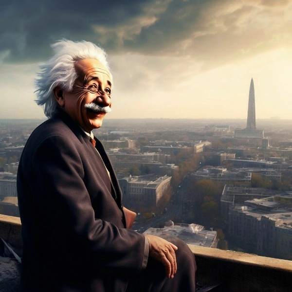

Гроза внезапно утихла, и всё вернулось к спокойствию.
Силы Теслы оставили его, и он почувствовал, как энергия
покидает тело. На его бороде больше не было синих искр,
но в сердце осталась уверенность, что он справился с вызовом.
Энштейн спрыгнул с крыши и направился прочь из города,
зная, что всегда готов к новым приключениям и испытаниям.
Как-то спать захотелось